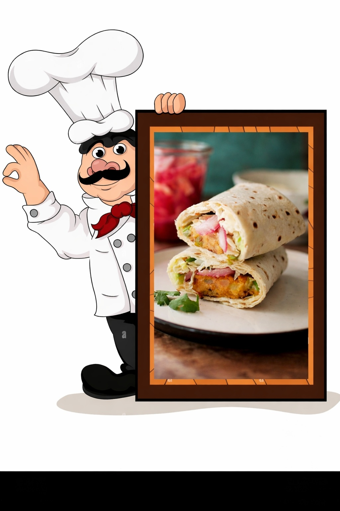

🌯 Chatpata Aloo Roll (Kids Friendly Tiffin Recipe)
🧺 Ingredients
🥔 For the Filling
- 🛢️ Oil – 2 tsp
- 🫚 Ginger – ¼ inch, finely chopped
- 🧄 Garlic – 3–4 cloves, finely chopped
- 🌶️ Green chilli – 1, finely chopped
- 🍅 Tomato – 1 small, chopped
- 🟢 Green peas – 2 tbsp
- 🌶️ Red chilli powder – ¼ tsp
- 🟡 Turmeric powder – ⅛ tsp
- 🍋 Amchur powder – ½ tsp
- 🧂 Chaat masala – ½ tsp
- 🧂 Salt – as per taste
- 🥔 Potato – 2, boiled and mashed
🫓 Other Ingredients
- 🫓 Cooked chapati – 2
- 🍅 Tomato ketchup – 2 tbsp
- 🥛 Mayonnaise – 2 tbsp
- 🧈 Butter or oil – for roasting

Method
- 🔥 Heat oil in a pan over medium flame.
- 🫚🧄🌶️ Add ginger, garlic, and green chilli. Sauté briefly until aromatic.
- 🍅 Add chopped tomato and cook until soft.
- 🟢 Add green peas and cook for 1–2 minutes.
- 🌶️🟡🍋🧂 Add all spices and salt. Mix well.
- 🥔 Add boiled and mashed potatoes. Mix thoroughly.
- ⏱️ Cook for 2–3 minutes until the mixture becomes dry. Switch off the flame.
- 🫓 Place a cooked chapati on a flat surface.
- 🍅🥛 Spread tomato ketchup and mayonnaise evenly.
- 🌯 Add the prepared aloo filling and roll tightly.
- 🧈🔥 Roast on a tawa until light golden and crisp on all sides.